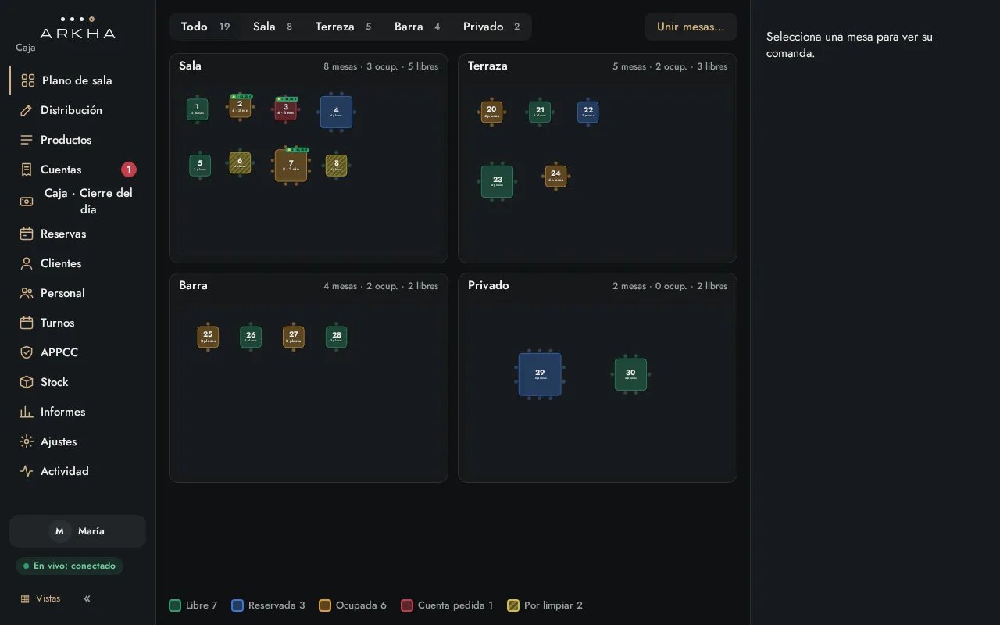
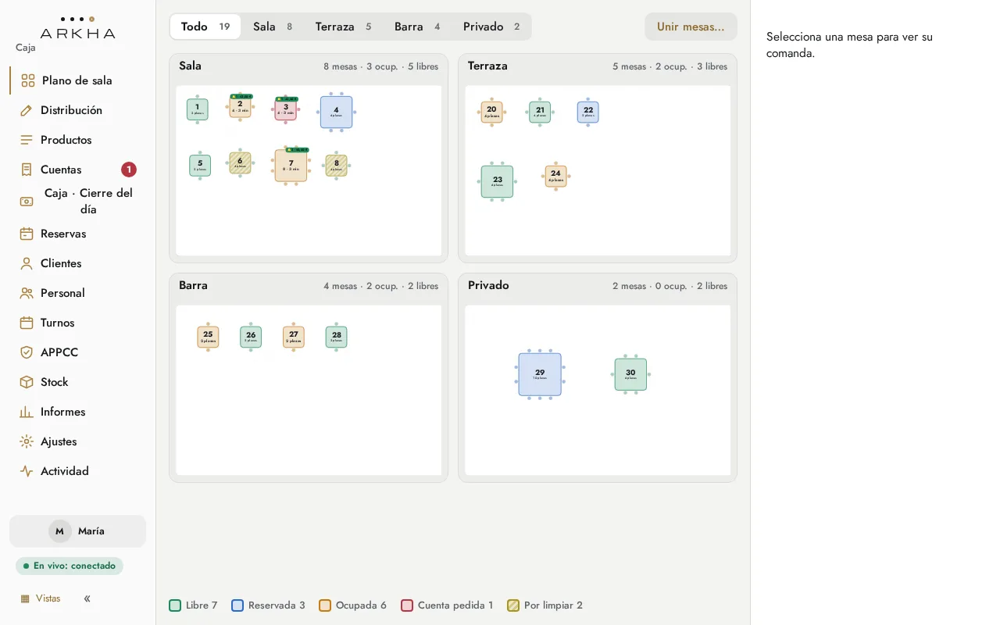
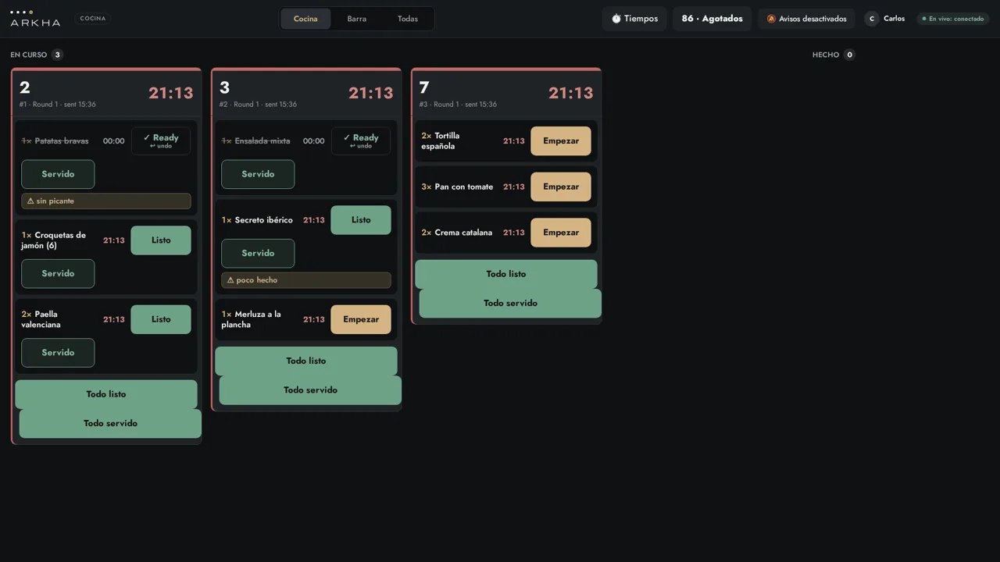
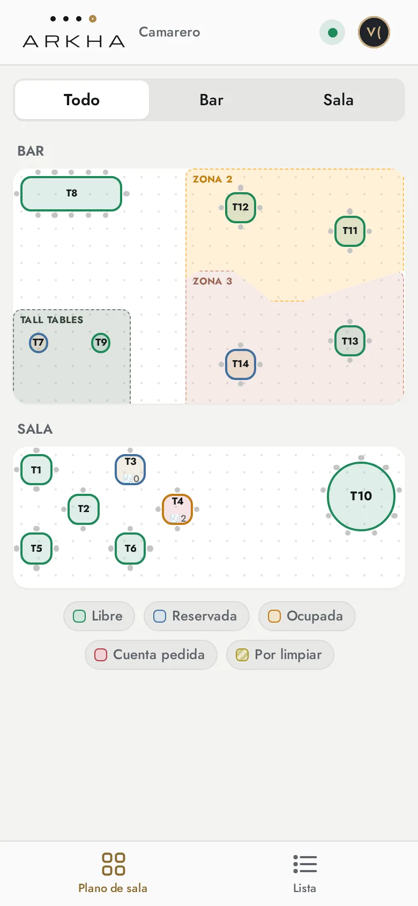
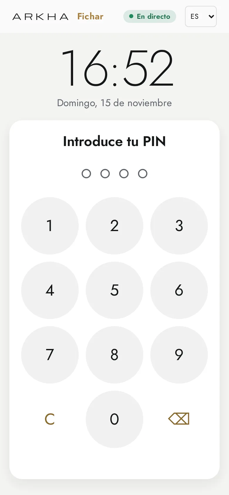
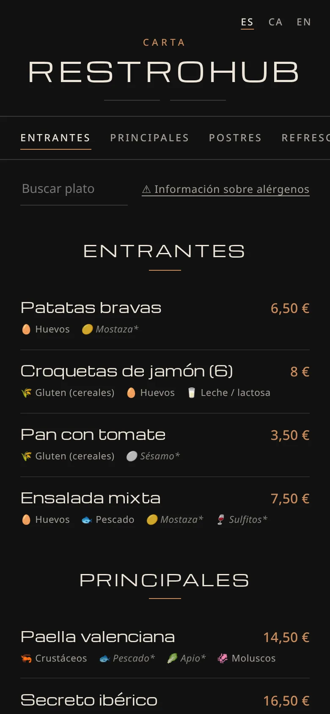
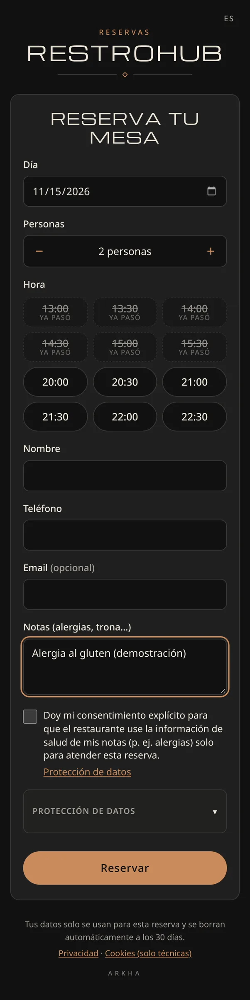
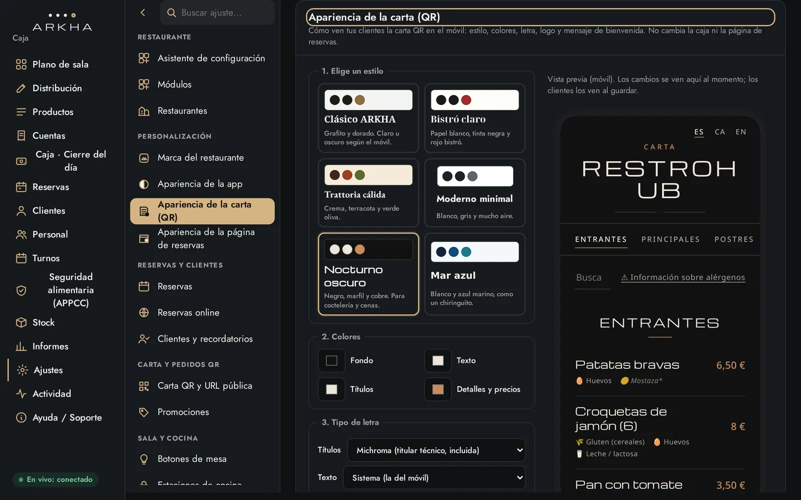
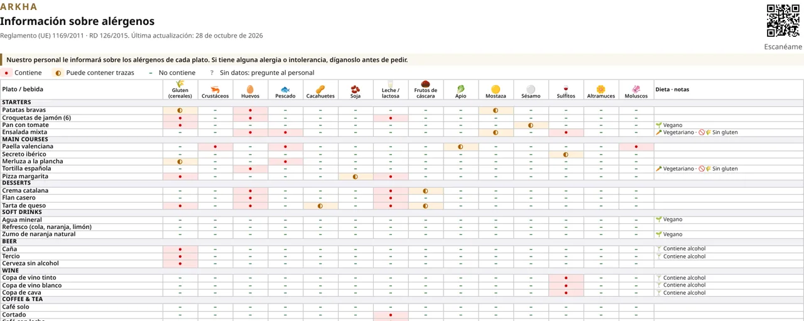

TPV para restaurantes
El TPV de tu restaurante, de la sala a la cocina.
ARKHA POS reúne mesas, comandas, cuentas, reservas online y carta QR en un sistema sencillo, disponible en español, catalán e inglés, que funciona en un pequeño dispositivo dentro de tu local. Hecho en Cataluña.


Funciones
Plano de sala
Diseña tu sala por secciones (sala, terraza, barra…), ve el estado de cada mesa de un vistazo y une mesas cuando llega un grupo.
Comandas a cocina y barra
Los pedidos llegan a la pantalla de cocina o de barra con temporizadores, para que nada se quede esperando.
App del camarero
Los camareros toman comandas desde el móvil, en tiempo real con la caja y la cocina.
Cuentas por día
Historial de cuentas cobradas agrupado por día, con filtros por periodo y forma de pago, y búsqueda.
Propinas y cierre de caja
Registras las propinas al cobrar (y también después) y cierras el día con el recuento de caja y el informe Z.
Fichaje en el móvil
El personal ficha la entrada y la salida desde el móvil. Si el fichaje es fuera de horario, se pide un motivo. Cada trabajador ve sus propias horas y puede descargar el PDF del mes; el encargado exporta el PDF de cada persona o de todo el personal. Los registros se conservan 4 años. Esta función está diseñada para satisfacer la norma del registro de jornada (RDL 8/2019).
Exportación para la gestoría
Cada mes (o un periodo a tu elección) descargas un CSV y un PDF con las ventas por día, el IVA por tipo, las formas de pago, las propinas, las facturas, las devoluciones y los cierres de caja.
Reservas online
Tus clientes reservan desde la web con disponibilidad real de mesas, y ARKHA asigna la mesa automáticamente. Si añaden notas de alergia, aparece una casilla de consentimiento explícito, desmarcada por defecto, con un enlace al aviso de privacidad: esas notas son datos de salud según el RGPD.
Carta QR
Carta digital para el móvil del cliente, con varios temas visuales para elegir y alérgenos en cada plato.
Personalización de tu restaurante
Pones el nombre y el logo de tu restaurante, eliges el aspecto de la carta QR (temas, colores y tipografías) y el de la página de reservas, que puede seguir el mismo estilo.
Ficha de alérgenos
Tabla de los 14 alérgenos generada a partir de tus productos, lista para imprimir o consultar.
Acceso del personal con PIN
Cada persona entra con su PIN y su foto de perfil. Rápido en el servicio, claro en la actividad.
Modo claro y oscuro
Interfaz en español, catalán e inglés, con tema claro, oscuro o automático según la luz del local.
Preparado para Verifactu, en desarrollo
Facturación con registros encadenados y código QR en el ticket, pensada para Verifactu. Esta función sigue en desarrollo y se ofrece en modo de pruebas. No está certificada.
Copia en Google Drive
La copia de seguridad cifrada en Google Drive viene activada por defecto en las instalaciones nuevas. El dueño conecta su cuenta una vez; hasta entonces las copias se quedan en el dispositivo del local.
Soporte remoto y actualizaciones
El personal abre tickets de soporte desde el propio TPV y el sistema puede recibir actualizaciones automáticas desde ARKHA Cloud, en una ventana de mantenimiento y con copia de seguridad y vuelta atrás si algo falla. El dispositivo del local sigue funcionando aunque no haya internet.
Cómo funciona
- 01
Un dispositivo en tu local
ARKHA corre en un pequeño equipo local (tipo Raspberry Pi). La sala sigue funcionando aunque falle internet.
- 02
Caja, móvil y cocina
Caja en el ordenador o tablet, camareros desde el móvil y pantalla en cocina y barra, sincronizados en tiempo real.
- 03
Copia de seguridad y nube
Tus datos se guardan en el dispositivo del local, con copia cifrada en Google Drive cuando la conectas. El TPV sigue funcionando sin internet; el soporte y las actualizaciones llegan desde ARKHA Cloud cuando hay conexión.
Capturas
Todas las capturas usan datos de demostración.







Pensado para el cumplimiento
RGPD
Los datos de una reserva se usan solo para gestionarla y se pueden borrar automáticamente pasado un plazo. Las notas de alergia se tratan como datos de salud: hace falta un consentimiento explícito, desmarcado por defecto, y un enlace al aviso de privacidad.
Sin cookies de seguimiento
Ni ARKHA ni esta web usan cookies de seguimiento ni scripts de terceros.
Alérgenos
Información de alérgenos por plato en la carta y en una ficha imprimible, según el Reglamento (UE) 1169/2011.
Pide una demo
Cuéntanos cómo es tu restaurante y te enseñamos ARKHA funcionando.
Planes, pronto.